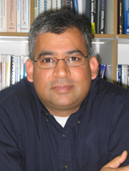
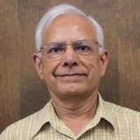

Keynote Speaker 1: Prof. Neeraj Suri, Technische Universität Darmstadt, Germany
Title: Kicking and Fixing Software: The Fun & Science of Experimental Approaches
Abstract: The perpetual elusiveness of correct-by-design software fosters the need of techniques to "find and fix" software deficiencies whether they arise from design, operational or deliberate instances. Operating Systems are of particular interest given the software size, complexity and their need to operate for a wide range of stresses. With the intent of post-design software fixes, the talk ruminates on the fun, value and science of experimental techniques to "kick n' fix" software.
Suri holds the TUD Chair Professorship on “Dependable Systems & Software” at TU Darmstadt, Germany and is also affiliated with Microsoft. Following his PhD at UMass-Amherst, he has held positions at Boston Univ, Saab Endowed Chair Professor, sabbaticals at Microsoft Research, and visiting positions at the Univ of Texas at Austin and Technion. His research has received trans-national funding from NSF/DARPA/DHS/ONR/AFOSR European Commission, German DFG/BMBF/DAAD/Loewe, Microsoft, IBM, Google, Apple, Boeing, GM, NASA, Airbus, SAP, NEC, Hitachi, Saab, Volvo, Daimler among others. He is a recipient of the NSF CAREER, Microsoft and IBM Faculty Awards. Suri's professional services span A-EIC for IEEE TDSC, editorial boards for IEEE TSE, Trans. Big Data (TBD), Trans. Cloud Computing (TCC), TPDS, ACM Computing Surveys, IEEE Security & Privacy and others. He has PC-chaired multiple dependability conferences and serves on advisory boards for Microsoft and multiple other US/EU/Asia industry and university boards. Suri chaired the IEEE Technical Committee on Dependability and Fault Tolerance, and it's Steering Committee. Additional professional details appear at: www.deeds.informatik.tu-darmstadt.de/suri
Keynote Speaker 2: Prof. Kishor S. Trivedi, Duke University, United States
Title: Software Fault Tolerance via Environmental Diversity
Abstract: Complex systems in different domains contain significant amount of software. Several recent studies have established that a significant fraction of system outages are due to software faults. Traditional methods of fault avoidance, fault removal based on extensive testing/debugging, and fault tolerance based on design/data diversity are found wanting. The key challenge then is how to provide highly dependable software. We discuss a new view of fault tolerance of software-based systems. We classify software faults into Bohrbugs and Mandelbugs, and identify aging-related bugs as a subtype of the latter. Traditional methods have been designed to deal with Bohrbugs. The next challenge then is to develop mitigation methods for Mandelbugs in general and aging-related bugs in particular. We submit that mitigation methods for Mandelbugs utilize environmental diversity. Retry operation, restart application, failover to an identical replica (hot, warm or cold) and reboot the OS are examples of mitigation techniques that rely on environmental diversity. For software aging related bugs it is also possible to utilize proactive environmental diversity technique known as software rejuvenation. We discuss environmental diversity both from experimental and analytic points of view and cite examples of real systems employing these techniques.
 Kishor S. Trivedi holds the Hudson Chair in the Department of Electrical and Computer Engineering at Duke University, Durham, NC. He has a B.Tech (EE, 1968) from IIT Mumbai, M.S. (CS, 1972) and PhD (CS, 1974) from the University of Illinois, Urbana-Champaign. He has been on the Duke faculty since 1975. He is the author of a well-known text entitled, Probability and Statistics with Reliability, Queuing and Computer Science Applications, first published by Prentice-Hall; a thoroughly revised second edition (including its Indian edition) of this book has been published by John Wiley. He is a Life Fellow of the Institute of Electrical and Electronics Engineers. He is a Golden Core Member of IEEE Computer Society. He has published over 600 articles and has supervised 46 Ph.D. dissertations. He is the recipient of IEEE Computer Society Technical Achievement Award for his research on Software Aging and Rejuvenation. His research interests in are in reliability, availability, performance, performability and survivability modeling of computer and communication systems. He works closely with industry in carrying our reliability/availability analysis, providing short courses on reliability, availability, performability modeling and in the development and dissemination of software packages such as SHARPE and SPNP. His URL is www.ee.duke.edu/~ktrivedi